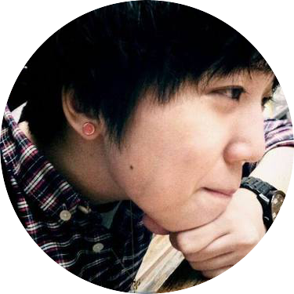

All About Anndo
About Anndo
I am currently a master's student at the University of Michigan School of Information, with a focus on User Experience (UX) Research and Design. Prior to this program, I was a Game Interaction Designer with extensive experience in: developing content strategies, designing and optimizing interaction design, and testing games. With my experience, user-centered design thinking, and a well-rounded UX skill set, I hope to be a part of the force crafting the best user experience.
Interests
I have many different interests and creative pursuits in life, feel free to check out some of my biggest interests! :-)
Music
Music is an essential part of my everyday life. My Spotify is always on, and I eagerly use Shazam whenever I hear good music by chance. As a concert lover, I have traveled to many cities worldwide for concerts and music festivals. By far, Fuji Rock Festival is my favorite live music experience.
Books
I am an avid reader and especially enjoy reading fiction, and my favorite authors are Haruki Murakami and Paul Auster.
P.S. If I have posters or some pieces of beautiful calendar paper to spare, I make my own DIY book covers.
Code
Coding is fun! In summer 2017, I dived into the world of full-stack web development, where I developed a strong skill set in: Ruby on Rails, HTML, CSS, JavaScript, etc. Believing "teaching is the best way to learn," I started blogging and updating my code to GitHub, actively sharing my learning and relentlessly writing tutorial articles.
Green Living
I shout "Go Blue" for my school pride; I say "Go Green" when it comes to lifestyle changes. Keys, wallet, and cell phone are not the only items that I carry every single day. To reduce the waste I generate in my daily life, I always bring my zero-waste kit with me.